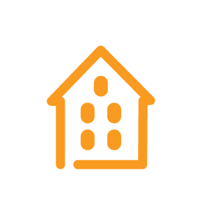
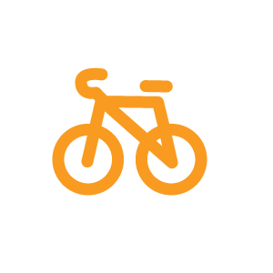
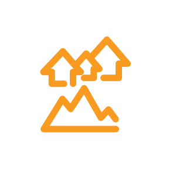
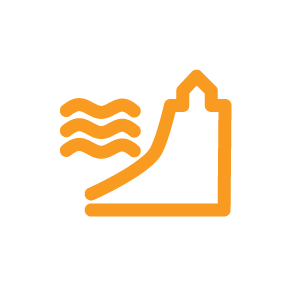

Los Objetivos de Desarrollo Sostenible (ODS) están formados por 17 objetivos y
169 metas que son la principal base para la consecución de la Agenda 2030 para el desarrollo Sostenible,
un plan de acción a favor de las personas, el planeta y la prosperidad. Buscan conseguir un crecimiento económico,
socialmente inclusivo y ambientalmente sostenible, y promueven la implicación de los gobiernos para conseguirlo.
El ODS 11, está enfocado al desarrollo urbano sostenible, y tiene como finalidad hacer que las ciudades sean más prósperas,
al mismo tiempo que aprovechan mejor sus recursos y reducen la desigualdad, la contaminación y la pobreza.

1. Vivienda y barrios marginales
Asegurar el acceso a la vivienda y servicios básicos adecuados, seguros y asequibles, y mejorar las zonas marginales.

2. Transporte sostenible
Proporcionar acceso a sistemas de transporte seguros, públicos, asequibles, accesibles y sostenibles y mejorar la seguridad vial, prestando especial atención a las necesidades de las personas en situación vulnerable.
3. Planificación participativa
Aumentar la urbanización inclusiva y sostenible y la capacidad para una planificación y gestión participativas, integradas y sostenibles de los asentamientos humanos en todos los países.
4. Patrimonio cultural y natural
Redoblar los esfuerzos para proteger y salvaguardar el patrimonio cultural y natural del mundo.
5. Reducción de riesgos de desastres
Reducir las muertes y las personas afectadas por los desastres, y las pérdidas económicas derivadas, con especial atención a las personas en situación vulnerable.
6. Calidad del aire y manejo de residuos
Reducir el impacto ambiental de las ciudades, con especial atención a la calidad del aire y a la gestión de los residuos.
7. Espacios públicos
Proporcionar zonas verdes y espacios públicos, seguros, inclusivos y accesibles, con especial atención a colectivos en situación vulnerable.

8. Vinculación urbano-rural y planificación regional
Fortalecer los vínculos económicos sociales y ambientales positivos entre las zonas urbanas, periurbanas y rurales por medio de la planificación al desarrollo nacional y regional.

9. Cambio climático y resiliencia
Aumentar el número de ciudades que adopten y pongan en marcha políticas y planes para promover la inclusión, el uso efectivo de recursos, combatir el cambio climático y gestionar los riesgos de desastres de todos los niveles.
10. Edificios sostenibles
Proporcionar apoyo a los países menos adelantados para que puedan construir edificios sostenibles y resilientes con materiales locales.
Los ODS promueven un desarrollo sostenible con base en un enfoque holístico y único que permite establecer y entender las interrelaciones entre 3 sistemas: económico, social y ambiental, para garantizar el desarrollo urbano sostenible, el desarrollo humano y el desarrollo del bienestar colectivo.
El CPI se basa en este enfoque para conseguir ciudades prósperas y un desarrollo urbano sostenible, con base en el equilibrio de sus 6 dimensiones.